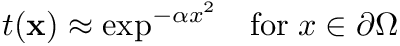

|
Ses3d-NT
simulation of elastic wave propagation in spherical sections
|
Geometric parameters. More...
Functions/Subroutines | |
| subroutine, public | allocate_geometric_parameters |
| subroutine, public | init_geometric_parameters |
| real(real_kind) function | init_taper (width, alpha) |
| Returns a Gaussian taper used as absorbing boundary. More... | |
Variables | |
| real(real_kind), public | jac |
| integer, parameter, public | nrdiss =3 |
| real(real_kind), dimension(1:nrdiss), public | tau_p = [ 1000.00, 70.00, 5.25 ] |
| real(real_kind), dimension(:,:,:,:,:,:), allocatable, public, protected | theta |
| real(real_kind), dimension(:,:,:,:,:,:), allocatable, public, protected | phi |
| real(real_kind), dimension(:,:,:,:,:,:), allocatable, public, protected | r |
| real(real_kind), dimension(:,:,:,:,:,:), allocatable, public, protected | sin_theta |
| real(real_kind), dimension(:,:,:,:,:,:), allocatable, public, protected | cot_theta |
| real(real_kind), dimension(:,:,:,:,:,:), allocatable, public, protected | r_sin_theta |
| real(real_kind), dimension(:,:,:,:,:,:), allocatable, public, protected | rr_sin_theta |
| real(real_kind), dimension(:,:,:,:,:,:), allocatable, public, protected | wx_wy_wz |
| real(real_kind), dimension(:,:,:,:,:,:), allocatable, public, protected | prof_x |
| real(real_kind), dimension(:,:,:,:,:,:), allocatable, public, protected | prof_y |
| real(real_kind), dimension(:,:,:,:,:,:), allocatable, public, protected | prof_z |
| real(real_kind), dimension(:,:,:,:,:,:), allocatable, public, protected | prof |
| real(real_kind), dimension(:,:,:,:,:,:), allocatable, public, protected | taper |
Geometric parameters.
...
| subroutine, public geometric_paras_mod::allocate_geometric_parameters |
Definition at line 74 of file geometric_paras.f90.
| subroutine, public geometric_paras_mod::init_geometric_parameters |
Definition at line 108 of file geometric_paras.f90.
| real(real_kind) function geometric_paras_mod::init_taper | ( | integer, intent(in) | width, |
| real(real_kind), intent(in) | alpha | ||
| ) |
Returns a Gaussian taper used as absorbing boundary.
The idea is to multiply the wave field inside a narrow strip along the artificial boundaries by a Gaussian taper

The actual implementation works as follows:
| width | Width in elements of the absorbing boundary |
| alpha | Strength ... |
Definition at line 344 of file geometric_paras.f90.
| real(real_kind), dimension(:,:,:,:,:,:), allocatable, public, protected geometric_paras_mod::cot_theta |
Definition at line 49 of file geometric_paras.f90.
| real(real_kind), public geometric_paras_mod::jac |
Definition at line 37 of file geometric_paras.f90.
| integer, parameter, public geometric_paras_mod::nrdiss =3 |
Definition at line 41 of file geometric_paras.f90.
| real(real_kind), dimension(:,:,:,:,:,:), allocatable, public, protected geometric_paras_mod::phi |
Definition at line 45 of file geometric_paras.f90.
| real(real_kind), dimension(:,:,:,:,:,:), allocatable, public, protected geometric_paras_mod::prof |
Definition at line 55 of file geometric_paras.f90.
| real(real_kind), dimension(:,:,:,:,:,:), allocatable, public, protected geometric_paras_mod::prof_x |
Definition at line 55 of file geometric_paras.f90.
| real(real_kind), dimension(:,:,:,:,:,:), allocatable, public, protected geometric_paras_mod::prof_y |
Definition at line 55 of file geometric_paras.f90.
| real(real_kind), dimension(:,:,:,:,:,:), allocatable, public, protected geometric_paras_mod::prof_z |
Definition at line 55 of file geometric_paras.f90.
| real(real_kind), dimension(:,:,:,:,:,:), allocatable, public, protected geometric_paras_mod::r |
Definition at line 45 of file geometric_paras.f90.
| real(real_kind), dimension(:,:,:,:,:,:), allocatable, public, protected geometric_paras_mod::r_sin_theta |
Definition at line 49 of file geometric_paras.f90.
| real(real_kind), dimension(:,:,:,:,:,:), allocatable, public, protected geometric_paras_mod::rr_sin_theta |
Definition at line 49 of file geometric_paras.f90.
| real(real_kind), dimension(:,:,:,:,:,:), allocatable, public, protected geometric_paras_mod::sin_theta |
Definition at line 49 of file geometric_paras.f90.
| real(real_kind), dimension(:,:,:,:,:,:), allocatable, public, protected geometric_paras_mod::taper |
Definition at line 55 of file geometric_paras.f90.
| real(real_kind), dimension(1:nrdiss), public geometric_paras_mod::tau_p = [ 1000.00, 70.00, 5.25 ] |
Definition at line 42 of file geometric_paras.f90.
| real(real_kind), dimension(:,:,:,:,:,:), allocatable, public, protected geometric_paras_mod::theta |
Definition at line 45 of file geometric_paras.f90.
| real(real_kind), dimension(:,:,:,:,:,:), allocatable, public, protected geometric_paras_mod::wx_wy_wz |
Definition at line 49 of file geometric_paras.f90.